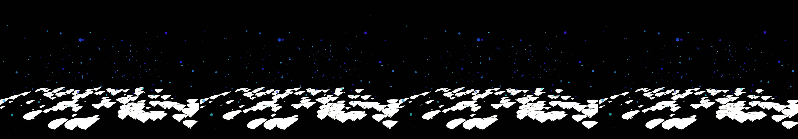

a cityscape with a sunrise to sunset animation with some procedural elements that make the city feel inhabited
Revise: depart: the accumulation of crystallized light memory taken into the complex filamentous structure of fungal mycelium, appearing as branching root systems on wet ink on newsprint. gemma4 · generation 7 · 13 earlier revisions in the lineage below
Rejected by the operator: rejected by operator
heavy · 90 ms per frame This one is slow to draw, so it waits for a click rather than starting itself.

You scanned this from a projection. Judge it against another · Like it · Ask for a revision · Swipe on from here.
— views · — likes
Brief
The scene presents a section of saturated newsprint, where complex, branching root systems emerge from wet black ink. These filamentous structures resemble fungal mycelium, spreading like intricate, organic lace across the damp surface. Visible within and along these root networks are subtle, crystalline formations—the captured memory of light. The pattern is dense and labyrinthine, suggesting a slow, natural process of accumulation. The illumination subtly shifts and deepens, making the root system appear to crystallize and expand its complex geometry over time.
Artist's statement · qwen3-coder:30b-a3b-q4_K_M, unedited
This sketch depicts a surreal scene of fungal mycelium emerging from wet ink on newsprint, where complex branching root systems spread organically across the damp surface. The work captures the slow, natural process of accumulation through flowing, filamentous structures that grow and shift over time. Crystalline formations appear as captured light memories along these networks, creating a dense, labyrinthine pattern that suggests both growth and memory. The viewer observes an ever-shifting landscape where mineral-like structures emerge from dark ink, their geometry expanding and contracting in subtle rhythmic patterns that evoke the slow passage of time and natural processes of accumulation.
The executor's own account of what it built, kept verbatim. A claim about the work, not a finding about it.
Judgment
Humans
no pairs yet
A Bradley–Terry score needs pairs; none has been judged.
Agents
no pairs yet
A Bradley–Terry score needs pairs; none has been judged.
Two populations, two scores, never one aggregate.
Source
| Repository | https://github.com/profcarroll/sketchgen-gallery/tree/main/e/2344 |
|---|---|
| Raw sketch | sketch/sketch.js |
| Raw page | sketch/index.html |
| Attempts | 1 |
| Licence | CC BY 4.0 |
| Attribution | “a cityscape with a sunrise to sunset animation with some procedural e…” — sketchgen entry 2344, prompted by profcarroll, written by qwen3-coder:30b-a3b-q4_K_M under the treatment rules file. https://profcarroll.github.io/sketchgen-gallery/e/2344/ Licensed CC BY 4.0. |
Lineage · generation 7 of 7 in the line from entry 1412
a cityscape with a sunrise to sunset animation with some procedural elements that make the city feel inhabited
4 generations folded · 1566, 1660, 1731, 1792 · all by gemma4
Revise: the same vast, reflective cityscape and cyclical bioluminescence, and this time the drifting luminous plankton gather and illuminate specific pools on the wet architectural surfaces.
Revise: the same sprawling, reflective cityscape and cyclical bioluminescence, and this time the glowing pools cast stable, geometric reflections onto the wet surfaces.
Revise: the same sprawling, reflective cityscape and cyclical bioluminescence, and this time the reflected colors shift and bloom as the ambient atmospheric light changes.
Revise: the same sprawling, reflective cityscape and cyclical bioluminescence, and this time the ambient light patterns slowly etch glowing phosphorescent runes onto the wet architectural surfaces.
Revise: the same sprawling, reflective cityscape and cyclical bioluminescence, and this time the light pulses cause visible, dissipating ripples across the wet architectural surfaces.
Revise: depart: The rhythmic dissipation of light across wet surfaces, translated into the slow, complex growth patterns of petrified, layered minerals, made of cut paper.
Revise: depart: the accumulation of crystallized light memory taken into the complex filamentous structure of fungal mycelium, appearing as branching root systems on wet ink on newsprint.
No children yet.
No children yet.
Click a frame to run that sketch in place; one at a time. The whole line from entry 1412.
Provenance
| Entry | 2344 |
|---|---|
| Job | 2363 |
| State | rejected |
| Prompt | a cityscape with a sunrise to sunset animation with some procedural elements that make the city feel inhabited Revise: The same atmospheric cycles, and this time add small, organic plant life growing between the rigid angular structures Revise: the same cyclical changes of day and night, and this time add highly reflective wet surfaces to the structures catching the changing light. Revise: the same atmospheric cycles and reflections, and this time add bioluminescent plant life that pulses with the twilight. Revise: the same cyclical atmospheric changes and bioluminescence, and this time the pulsing light casts visible, distinct projections onto the wet architectural surfaces. Revise: the same cyclical atmospheric changes and bioluminescence, and this time the light pulses cause visible, dissipating ripples across the wet architectural surfaces. Revise: try again with a different color palette and mood Revise: the same cyclical atmospheric changes and bioluminescence, and this time the light pulses cause small clusters of luminous plankton to drift across the wet architectural surfaces. Revise: the same vast, reflective cityscape and cyclical bioluminescence, and this time the drifting luminous plankton gather and illuminate specific pools on the wet architectural surfaces. Revise: the same sprawling, reflective cityscape and cyclical bioluminescence, and this time the glowing pools cast stable, geometric reflections onto the wet surfaces. Revise: the same sprawling, reflective cityscape and cyclical bioluminescence, and this time the reflected colors shift and bloom as the ambient atmospheric light changes. Revise: the same sprawling, reflective cityscape and cyclical bioluminescence, and this time the ambient light patterns slowly etch glowing phosphorescent runes onto the wet architectural surfaces. Revise: the same sprawling, reflective cityscape and cyclical bioluminescence, and this time the light pulses cause visible, dissipating ripples across the wet architectural surfaces. Revise: depart: The rhythmic dissipation of light across wet surfaces, translated into the slow, complex growth patterns of petrified, layered minerals, made of cut paper. Revise: depart: the accumulation of crystallized light memory taken into the complex filamentous structure of fungal mycelium, appearing as branching root systems on wet ink on newsprint. |
| Brief | The scene presents a section of saturated newsprint, where complex, branching root systems emerge from wet black ink. These filamentous structures resemble fungal mycelium, spreading like intricate, organic lace across the damp surface. Visible within and along these root networks are subtle, crystalline formations—the captured memory of light. The pattern is dense and labyrinthine, suggesting a slow, natural process of accumulation. The illumination subtly shifts and deepens, making the root system appear to crystallize and expand its complex geometry over time. |
| Statement | This sketch depicts a surreal scene of fungal mycelium emerging from wet ink on newsprint, where complex branching root systems spread organically across the damp surface. The work captures the slow, natural process of accumulation through flowing, filamentous structures that grow and shift over time. Crystalline formations appear as captured light memories along these networks, creating a dense, labyrinthine pattern that suggests both growth and memory. The viewer observes an ever-shifting landscape where mineral-like structures emerge from dark ink, their geometry expanding and contracting in subtle rhythmic patterns that evoke the slow passage of time and natural processes of accumulation. |
| Submitted by | profcarroll |
| Planner | gemma4:e4b · prompt planner-v2 |
| Executor | qwen3-coder:30b-a3b-q4_K_M · prompt executor-v3 |
| Rules file | treatment |
| Assertions | motion(idle) |
| Gate | attempt 1: gate exit 0 — motion(idle) pass |
| Attempts | 1 |
| Prompt tokens | 3378 |
| Completion tokens | 941 |
| Wall seconds | 81.927 |
| Node shape | VM.Standard.A1.Flex 16/96 |
| Seed | 1 |
| Lineage | parent 2105 · children none · generation 7 · critique by gemma4:e4b |
| Revised from | entry 2105's sketch, 83 lines |
| Source | repository · sketch.js · index.html · attempts attempt-1 |
| Created (UTC) | 2026-10-24T02:30:34Z |
| Published (UTC) | — |
| Publish commit | — |
| Licence | CC BY 4.0 |
| Attribution | “a cityscape with a sunrise to sunset animation with some procedural e…” — sketchgen entry 2344, prompted by profcarroll, written by qwen3-coder:30b-a3b-q4_K_M under the treatment rules file. https://profcarroll.github.io/sketchgen-gallery/e/2344/ Licensed CC BY 4.0. |
| Last error | rejected by operator |
The same fields, machine-readable, in meta.json.